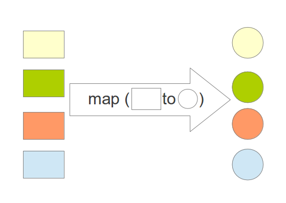
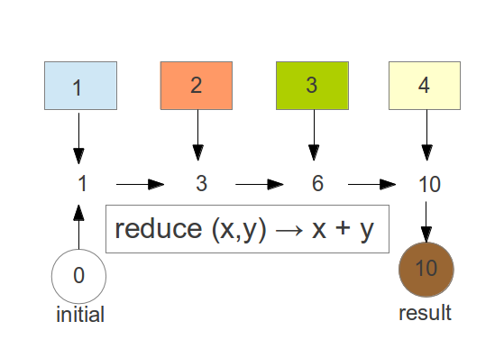
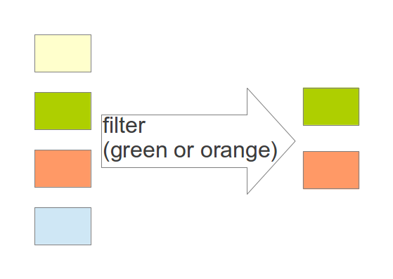
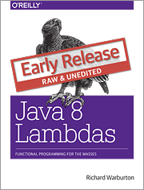

Lambdas: Myths and Mistakes
by Richard Warburton
the critical design tool for software development is a mind well educated in design principles. It is not ... technology.
Craig Larman
Talk Structure
- Why am I talking about this?
- Intro to Lambda Expressions
- Beyond the Myths
- Functional Thinking
Why am I talking about this?
Lambda Expressions are coming in Java 8!
lots of discussion/debate
How can we help?
Adopt-a-JSR
Adopt-a-JSR?
- More community driven standards
- Hackdays
- Serve on Expert Groups
Some discussion unimportant
Concrete Examples focus discussion
Intro to Lambda Expressions
Overview of Lambdas
- Goal: Better Libraries
- Example: Collections with Data Parallelism
- Approach: Allow Code as Data
Action Listener
button.addActionListener(new ActionListener() {
public void actionPerformed(ActionEvent event) {
System.out.println("button clicked");
}
});
Code as Data
button.addActionListener(
?
);
Need a parameter
button.addActionListener(event
);
Lambda Example
button.addActionListener(event ->
System.out.println("button clicked")
);
No parameters
Runnable helloWorld =
() -> System.out.println("Hello World");
Variable Capture
String name = getUserName();
button.addActionListener(event ->
System.out.println("hi " + name)
);
Functional Interfaces
- Everything in Java has a type
- Problem: Need types to represent Functions
- Solution: Use interfaces
Functional Interfaces
public interface ActionListener extends EventListener {
public void actionPerformed(ActionEvent event);
}
Streams
- Support automated data parallelism
- Build computation pipelines
- Iterator with inversion of control
External Iteration
int count = 0;
for (Artist artist : artists) {
if (artist.isFrom("London")) {
count++;
}
}
Internal Iteration
artists.stream()
.filter(artist -> artist.isFrom("London"))
.count();
map
map
List<String> collected = Stream.of("a", "b", "hello")
.map(string -> string.toUpperCase())
.collect(toList());
assertEquals(asList("A", "B", "HELLO"), collected);
reduce
reduce
int sum = Stream.of(1, 2, 3, 4)
.reduce(0, (acc, x) -> acc + x);
assertEquals(10, sum);
filter
filter
List<String> beginningWithNumbers =
Stream.of("a", "1abc", "abc1")
.filter(value -> isDigit(value.charAt(0)))
.collect(toList());
assertEquals(asList("1abc"), beginningWithNumbers);
Putting it all together
for a given an album, find the nationality of every band playing on that album
Putting it all together (2)
- transform an album into its artists
- figure out which artists are bands
- find the nationalities of each band
Putting it all together (3)
List<String> origins =
album.getMusicians()
.filter(artist -> artist.getName().startsWith("The"))
.map(artist -> artist.getNationality())
.collect(toList());
Method References
str -> str.length
String::length
x -> foo.bar(x)
foo::bar
str -> new Name(str)
Name::new
Beyond the Myths
Claim: Syntax is the most important thing about Lambda Expressions
Yeah, I liked the # syntax proposal better, too. One less character to type! :)
Have you considered 'default null'? It will save a keyword
How about a single punctuation mark, currently unused, as syntax sugar for "()->".
(_, _) -> _ + _
This is starting to look like risque ASCII art :)
Its a Myth!

Claim: Syntax is irrelevant

// Originally invalid
Stream.of(1, 2, 3)
.forEach(x -> System.out.println(x));
// Required extra ;
Stream.of(1, 2, 3)
.forEach(x -> System.out.println(x););
Difference between expectations
- Many language features
stolen!adapted - Missing Features
- Stronger Type System
- Tuples
- List construction syntax
Framing Effect
Different reactions depending on whether something is presented as a loss or a gain.
Recall our earlier example
List<String> origins =
album.getMusicians()
.filter(artist -> artist.getName().startsWith("The"))
.map(artist -> artist.getNationality())
.collect(toList());
Eager vs Lazy (2)
album.getMusicians()
.filter(artist -> artist.getName().startsWith("The"))
.map(artist -> artist.getNationality())
// What's happened?
.collect(toList());
Very little Testing
Maybe ...
- a reflection on popularity of TDD
- spikes are good for learning
- unfamiliarity with testing lambdas
How do I test this?
list.stream()
.map(x -> 1.0 / Math.ceil(1 + Math.pow(x) + Math.atan2(y, x)))
.collect(toList());
Approach 1: Test surrounding method
- Don't test the lambda
- Test the method its surrounded by
- Works well for simple lambdas
Approach 2: Extract Method
double complexFunction(double x) {
return 1.0 / Math.ceil(1 + Math.pow(x) + Math.atan2(0, x));
}
list.stream()
.map(this::complexFunction)
.collect(toList());
Mistake: debugging
// Streams
list.stream()
.filter(filteringFunction)
.map(mappingFunction)
.collect(toList());
// Ye olde for loop
List<Bar> bars = new ArrayList<>();
for (Foo element : list) {
if (filteringFunction(element) {
Bar result = mappingFunction(element);
bars.add(result);
}
}
peek
list.stream()
.filter(filteringFunction)
.peek(e -> System.out.println("Filtered value: " + e));
.map(mappingFunction)
.map(e -> e);
.collect(toList());
Compiler Error Messages
Comparators
Comparator<String> comparator = comparing(String::length);
Comparator<String> comparator = comparing(str -> str.length);
Compiler Error
java: reference to comparing is ambiguous both
method
<T>comparing(java.util.function.ToIntFunction< ? super T>)
in java.util.Comparator and method
<T,U>comparing(java.util.function.Function< ? super T,? extends U>)
in java.util.Comparator match
What happened?
// Generic object variant
public static <T, U extends Comparable< ? super U>>
Comparator<T>
comparing(Function< ? super T, ? extends U> keyExtractor)
// Specialised primitive variant
public static <T>
Comparator<T>
comparing(ToIntFunction< ? super T> keyExtractor)
Summary
- Syntax important, but not in the way people think
- New approaches for debugging and testing
- Take care of overloads and compiler error messages
Functional Thinking
Functional Thinking?
Thinking in terms of the input to output relationship and not a sequence of steps
First code that people write
List<Integer> numbers = Arrays.asList(1, 2, 3);
numbers.forEach(x -> {
System.out.println(x);
});
Non-idiomatic Proposals
Eg: capture non-final local variables
Example Problem
Count the number of instances of each word in a document.
Ideal Solution
reader.lines()
.flatMap(s -> s.splitAsStream(" "))
.collect(groupingBy(s -> s,
counting()));
Ideal Solution (then)
reader.lines()
.flatMap(s -> Stream.of(s.split(" ")))
.collect(groupingBy(s -> s,
reducing(s -> 1, Integer::sum)));
// Map entries for "dad"
// [ "dad", "dad", "dad" ] => [1, 1, 1] => 3
Bad Solution (Part 1)
Map<String, List<String>> initial
= br.lines()
.flatMap(s -> Arrays.stream(s.split(" ")))
.collect(groupingBy(s -> s));
Map<Map.Entry<String, Integer>, Integer> freq1 = initial
.entrySet().stream()
.map(entry -> new AbstractMap.SimpleImmutableEntry<String,
Integer>(entry.getKey(), entry.getValue().size()))
.collect(Collectors.toMap(entry -> entry.getValue()));
Bad Solution (Part 2)
Supplier<HashMap<String, Integer>> supplier = () -> new
HashMap<String, Integer>();
BiConsumer<HashMap<String, Integer>, Map.Entry<String, Integer>> accum =
(HashMap<String, Integer> result, Map.Entry<String, Integer>
entry) -> result.put(entry.getKey(), entry.getValue());
BiConsumer<HashMap<String, Integer>, HashMap<String, Integer>>
merger = HashMap::putAll;
Map<String, Integer> freq2 = initial.entrySet().stream()
.map(entry -> new AbstractMap.SimpleImmutableEntry<String,
Integer>(entry.getKey(), entry.getValue().size()))
.collect(supplier, accum, merger);
This takes thought

Summary
- Idioms are vital
- Not Java specific at all
- Requires Practise
Conclusions
- Gone through a bunch of examples of specific issues
- ‘Functional Thinking’: Not necessary to start learning.
- Try before you buy
Q & A
@RichardWarburto